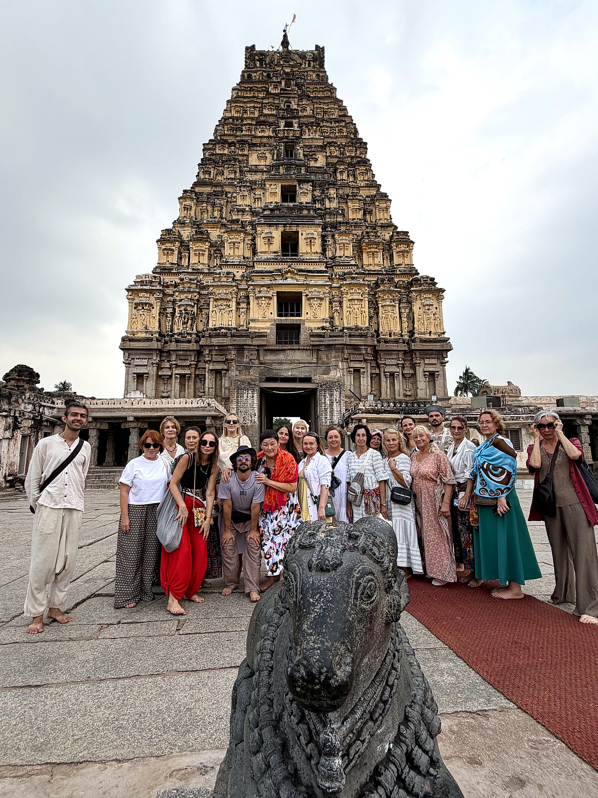
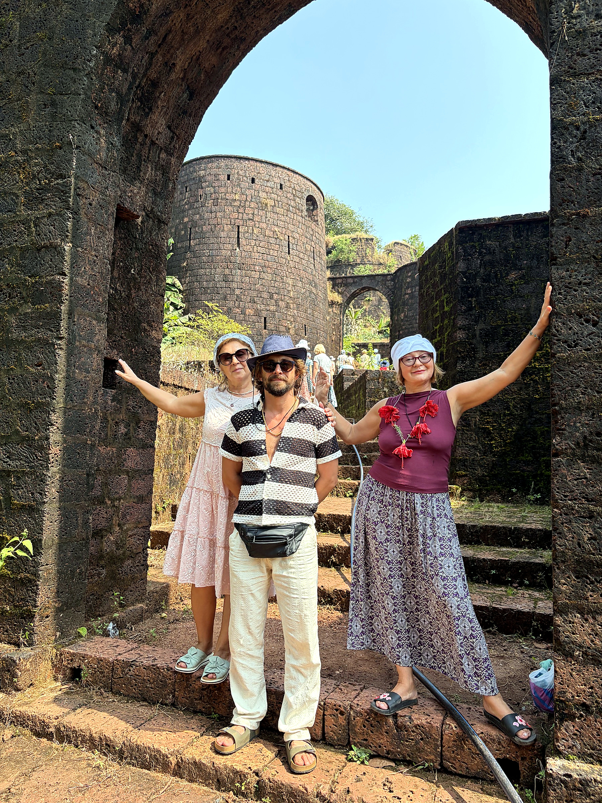
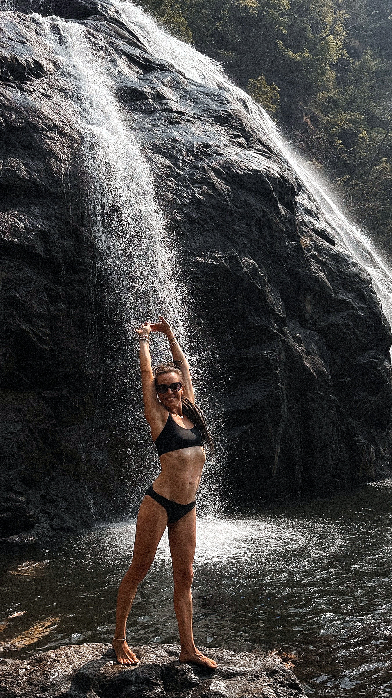
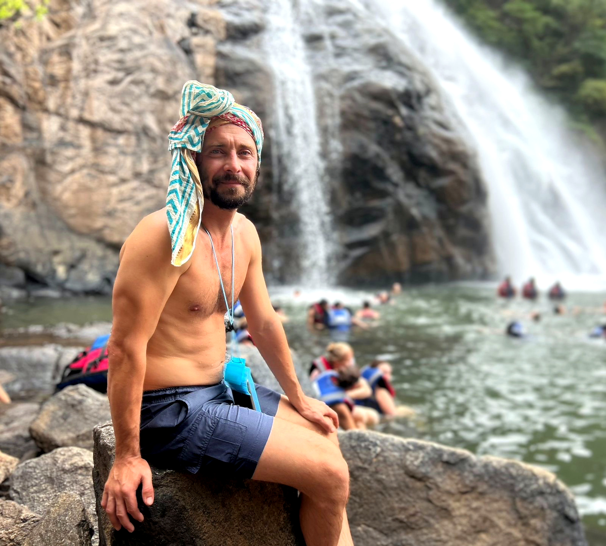
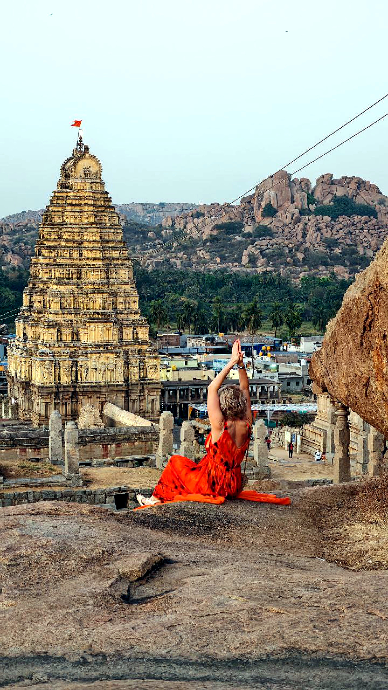

GOA FLOW · ЖИВЫЕ МАРШРУТЫ
Гоа, который
остаётся с вами.
В ретрите есть время не только для практики и океана. Мы выезжаем туда, где Индия открывается через дорогу, запах специй, древние храмы, воду и людей. Маршруты могут меняться по погоде и доступности — главное, чтобы каждый выезд был живым и комфортным.

Почувствовать место.
06 / ЭКСКУРСИИ В ПРОГРАММЕ
Два экскурсионных дня уже входят в ретрит. Едем на комфортабельном автобусе с кондиционером, небольшими группами и без спешки. Мурдешвар и Хампи можно добавить отдельно — это два самостоятельных маршрута для тех, кто хочет продолжить путешествие.
01 · ЦЕЛЫЙ ДЕНЬ · МАХАРАШТРА
Реди-Форт,
Ганеша и Paradise Beach.
Утром садимся в комфортабельный автобус с кондиционером и едем на север, в Махараштру. Первый пункт — Реди-Форт: гуляем по крепости, слушаем историю места и устраиваем красивую фотосессию у моря и старых стен.
Дальше заезжаем в храм Ганеши в Реди — тихое, очень живое место с особой атмосферой. Завершаем день на Paradise Beach: отдыхаем, купаемся, при спокойном море пробуем снорклинг и обедаем красиво у пляжа.







02 · ЦЕЛЫЙ ДЕНЬ · ВОДОПАДЫ И СПЕЦИИ
Дудхсагар,
джиппинг и плантация специй.
Второй экскурсионный день начинается с дороги к водопаду Дудхсагар. После автобуса пересаживаемся на джипы и едем по лесной дороге — через красную землю, зелень и брызги к одному из самых впечатляющих мест Гоа.
После водопада нас ждёт плантация специй: смотрим, как растут кардамон, перец и корица, обедаем и отдыхаем в тени. Два этапа одного насыщенного дня — водопад и живой сад, где Гоа раскрывается через природу, аромат и вкус.
03 · ДОПОЛНИТЕЛЬНАЯ ЭКСКУРСИЯ · КАРНАТАКА
Мурдешвар,
океан и храм Шивы.
Отдельный маршрут по побережью Карнатаки — для тех, кто хочет увидеть другую сторону южной Индии. Мы едем к храмовому комплексу Мурдешвара, смотрим на огромную статую Шивы и оставляем время для панорамы Аравийского моря.
Это путешествие про масштаб, камень, ветер и океан: день, который можно добавить к ретриту отдельно, не смешивая его с включённой программой экскурсий.

04 · ДОПОЛНИТЕЛЬНОЕ ПУТЕШЕСТВИЕ
Хампи —
на два дня глубже.
Если хочется продолжить путешествие после ретрита, можно отправиться в Хампи на два дня: древние храмы, каменные холмы, рассветы и ощущение места, которое невозможно пересказать одной фотографией.

Открыть страницу Хампи ↗